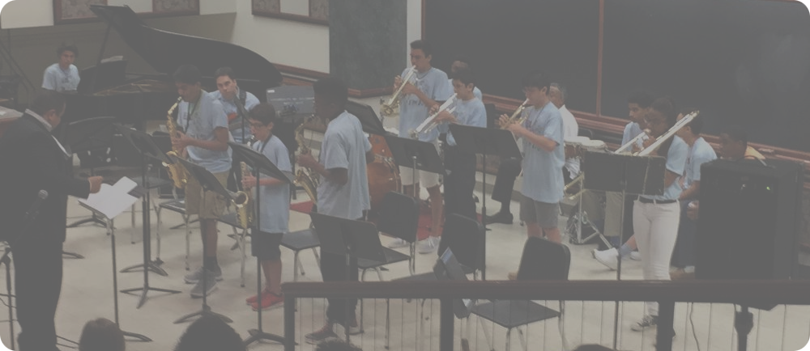

The mission of the Banks, Bridgewater & Lewis (BBL) Fine Arts Academy is to enhance the musical knowledge
base of young musicians by providing meaningful supplementary curriculum utilizing the genres of Blues, Jazz,
Gospel, R&B and Soul in order to participate and contribute successfully to their respective school ensemble.

Began in 2005 as afaith based collaboration between two community leaders from Bethel A.M.E. Church, Salem Baptist Church and several University of Illinois programming units. Our name was "Mo' Betta Music After School Academy".
The objective was to offer jazz and popular music enrichment activities that encourage school age low-income students in upper elementary through high school and of all race, gender, and economic status to strive for excellence so they can participate and compete in their local school bands and choirs
Students and professional instructors interact through private lessons, small and large ensemble teaching sessions. Mo’ Betta uses musical instruction as a tool to help students develop a holistic personality and develop skills that will promote emotional intelligence and intellectual curiosity. Research shows that students engaged in constructive after school activities in musical arts tend to be more engaged and invested in their educational development. (Schlaug, Norton, Overy and Winner, 2005, entire article).
From 2010-2015, Mo’ Betta was a program of the Bridgewater-Sullivan Community Life Center which was the fiscal agent of the program. In 2015 BBL was granted not-for profit status and operates as a 501c3 entity.
Mo Betta began as an all-volunteer endeavor. We are now able to compensate instructors who are highly trained and qualified in their respective areas. The instructional staff includes University professors, graduate students, and local professional musicians
In 2013, Mo’ Betta changed its name to the Banks Bridgewater Lewis Fine Arts Academy (BBL Fine Arts Academy). The name change reflects a vision for an expanded arts academy that will be inclusive of drama, dance, and visual arts. The names also honors members of the community who have supported this group from the early stages: Carrie Banks, Erma Bridgewater and Rosalind Lewis.